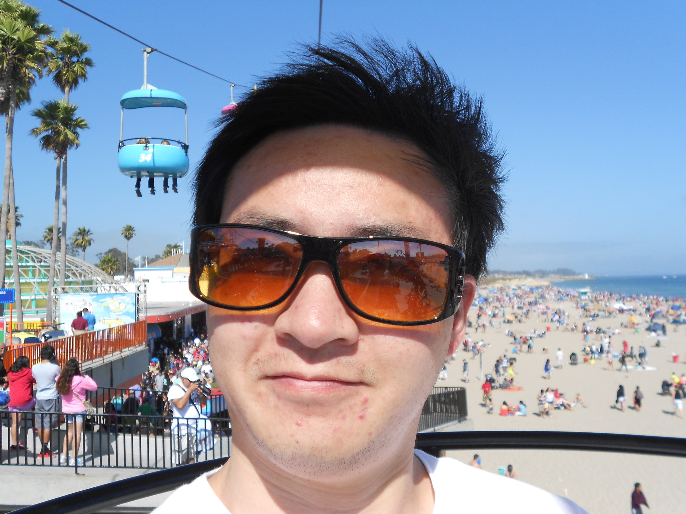

 |
Jipeng Huang () |
Starting from June 2014, I left OSU and became a software engineer. Between Sep 2010 and May 2014, I was a Phd student in the Department of Computer Science and Engineering at The Ohio State University. At OSU, I worked in the PLaSS group under the guidance of Professor Michael Bond, solving some issues related to concurrency and dynamic analysis. During my graduate research at OSU, most of my work was done inside Jikes Research Virtual Machine and we did tons of work which highly modified the JVM compilers, runtime system and garbage collection.
My general research at OSU was mainly developing program analysis for compilers, runtime system and memory management. Broadly speaking, I was trying to use dynamic analysis technique to develop efficient approach to make nowadays software more reliable.
Publications
| PPoPP'2015 | Low-Overhead Software Transactional Memory with Progress Guarantees and Strong Semantics Minjia Zhang, Jipeng Huang, Man Cao, and Michael D. Bond Paper Talk |
| PLDI'2014 | DoubleChecker: Efficient Sound and Precise Atomicity Checking Swarnendu Biswas, Jipeng Huang, Aritra Sengupta, and Michael D. Bond Paper Talk |
| OOPSLA'2013 | Efficient Context Sensitivity for Dynamic Analyses via Calling Context Uptrees and Customized Memory Management Jipeng Huang, and Michael D. Bond Paper Talk |
| OOPSLA'2013 | Octet: Capturing and Controlling Cross-Thread Dependences Efficiently Michael D. Bond, Milind Kulkarni, Man Cao, Minjia Zhang, Meisam Fathi Salmi, Swarnendu Biswas, Aritra Sengupta, and Jipeng Huang Paper Talk |
| PLDI'2011 FIT | Efficient, Context-Sensitive Dynamic Analysis via Calling Context Uptrees Jipeng Huang, and Michael D. Bond Paper Talk |